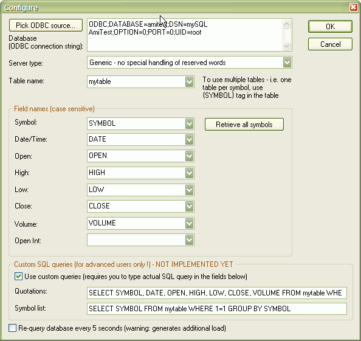

Copyright (C)2006, 2007 AmiBroker.com.
Last updated: March 21, 2007 19:33
There are two plugins:
ODBC.dll - data plugin
ODBCA.dll - AFL plugin
Data plugin handles retrieving quotation data, while AFL plugin allows to access other data from AFL formula level.
In fact these two plugins are almost identical and will be merged in the future into one as soon as AmiBroker will have support for dual-mode plugins.
Both plugin files should be copied to " Plugins" subfolder inside AmiBroker directory.
Once properly loaded they will appear under Tools->Plugins in AmiBroker as:
ODBC Data and AFL data plugins and their source codes are available from the following locations:
Data plugin can connect to any database that has corresponding ODBC driver. In order to allow to access data, the table holding quotations needs to have the following columns:
Types of fields are not that important as plugin has ability to auto-convert if types differ. Recommended types are just as a guideline for best performance.
To connect to external database please follow these steps:
1. Go to File->New database
2. Enter new database path and click "Create" button
3. Select "ODBC/SQL Universal Data plugin" from Data source combo
4. Click on "Configure" button
5. Click on "Pick database button" and create new ODBC source or pick existing one then click OK
6. Select desired table name from the "Table name" combo
7. Pick correct column names for Open/High/Low/Close/Symbo/Date fields or accept defaults
8. (Optional) You may press "Retrieve symbols" button to get the list of symbols transferred from the external database to AmiBroker
9. Click OK
10. Click OK to close Database Settings dialog
Configuration Dialog
Data plugin configuration dialog is available from File->Database Settings->Configure

Controls:
Pick ODBC Data source... - brings up standard Windows ODBC data source selector that allows you to pick existing source or create new one. After picking the data source appropriate connection string is copied automatically to Database (ODBC connection string). Note that in case of some servers (for example Microsoft SQL Express 2005) it may be required to add manually the following two items to the connection string: SERVER=.\SQLEXPRESS;DRIVER={SQL Server};
If picked data source is available, then plugin connects to it and fills Table name combo box with the list of available tables.
Database (ODBC connection string) - standard ODBC connection string required to connect to the database. This includes the data source name as well as other optional information, such as a user ID and password. For example, "ODBC;DSN=SQLServer_Source;DATABASE=MyDatabase;UID=SA;PWD=abc123" is a possible connection string. For more information about Microsoft SQL Server connection strings see this: http://msdn.microsoft.com/library/default.asp?url=/library/en-us/odbcsql/od_odbc_d_4x4k.asp
Server Type - this allows to fine-tune the plugin to particular database type. There are some important differences between different database systems. For example different systems use different quote mark for enclosing reserved words. mySQL uses ` (backtick) while Microsoft database systems use [ ] instead. Also mySQL has LIMIT statement that is absent with other databases. Microsoft SQL Server has problems handling column names using reserved words like OPEN therefore if you are using MS SQL Server you MUST select it here otherwise you will get errors. If you are using database system that is NOT listed here please select "Generic".
Table name - combo box field that is filled with all tables present in the database currently connected. You should pick the table which holds quotation data (i.e. SYMBOL, DATA, OPEN, HIGH, LOW, CLOSE, VOLUME columns)
Symbol - the name of the field in selected table that holds ticker symbols. By default it is set to SYMBOL but you can pick any other column name that you have in your database
Retrieve All Symbols - pressing this button queries the database with the following SQL :
SELECT Symbol FROM <selectedtable> GROUP BY Symbol
- this gives the list of all symbols available in the table and this list is then copied to AmiBroker's internal symbol list (so you don't need to add symbols manually)
Date/Time, Open, High, Low, Close, Volume, Open Int - these fields define column names for subsequent price data fields. You may use them to change the names of the columns if your database does not follow default schema of SYMBOL, DATE, OPEN, HIGH, LOW, CLOSE, VOLUME. Open Int field is optional
Requery database every 5 seconds - if you check this box, the plugin will trigger automatic refreshes of all charts causing re-query of database every 5 seconds. This is useful if your database is fed with real time data and you want changes to be reflected (almost) immediatelly on the charts. Please note that if you are using EOD database you should NOT use this feature as it just adds extra load to your database and to your computer.
Custom SQL queries ( for advanced users only ):
This functionality allows to modify queries used in quote and symbol list retrieval. It can be used if you want to use joins or views or stored procedures to retrieve data.
Use custom queries - if this box is checked the plugin will use custom queries specified in Quotations and Symbol List fields below to query for quotes and symbol list instead of using predefined ones.
Quotations - custom SQL query used to retrieve quotations for particular symbol. The query needs to return the recordset that contains all price fields defined above (SYMBOL, DATA, OPEN, HIGH, LOW, CLOSE and VOLUME) for given ticker. The recordset must be sorted in DESCENDING date order. Default query (for mySQL database) used is:
SELECT SYMBOL, DATE, OPEN, HIGH, LOW, CLOSE, VOLUME FROM <tablename> WHERE SYMBOL='{SYMBOL}' ORDER BY DATE DESC
To use views instead of tables simply use <viewname> instead of <tablename>
Symbol list - custom SQL query used to retrieve quotations for particular symbol. The query needs to return the recordset that contains one column that holds list of unique symbols. Default query (for mySQL database) used is:
SELECT SYMBOL FROM <tablename> WHERE 1=1 GROUP BY SYMBOL
odbcOpenDatabase( "connectstring" )
- opens database using ODBC driver
connectstring - specifies an ODBC connect string. This includes the data source name as well as other optional information, such as a user ID and password. For example, "DSN=SQLServer_Source;UID=SA;PWD=abc123" is a possible connect string.
If you do not know what exactly connection string is, provided that you use ODBC Data plugin as your quotation source as well, you may go to File->Database Settings->Configure and copy connection string from "Data source" field (you need to press "Pick data source" button first if database was not configured).
Example:
odbcOpenDatabase("ODBC;DATABASE=amitest;DSN=mySQL
AmiTest;OPTION=0;PORT=0;UID=root");
- allows to set names of symbol and date/time columns.
By default the plugin uses SYMBOL and DATE as names of those two columns to produce internally statements like this:
SELECT FIELD, DATE FROM tablename WHERE SYMBOL = 'MSFT' ORDER BY DATE ASC
This function is provided to allow you to read data from tables that have different column names than defaults.
Example:
odbcSetFieldNames("ticker",
"datetime" );
odbcGetArray( "tablename", "symbol", "fieldname" )
- retrieves array from database table
"tablename" - is the name of table to retrieve data from
"symbol" is the ticker symbol to request data for, if you specify empty string then current symbol is used
"fieldname" is the column name with custom data
The plugin internally executes the following query
SELECT fieldname, DATE FROM tablename WHERE SYMBOL = 'symbol' ORDER BY DATE ASC
and returns data held in fieldname column.
Example:
Graph0=odbcGetArray("mytable", "", "userval1");
odbcGetArraySQL( "sql statement" )
- retrieves array from database using SQL statement
"sql statement" - is either SELECT statement on table or view or a call to stored procedure.
The statement needs to return the recordset with TWO columns. First column should be the data itself and second column should be date/time column. The recordset must be sorted by second column (date/time) in ASCENDING order.
Graph0=odbcGetArraySQL("SELECT
userval1, DATE FROM mytable WHERE SYMBOL='"+Name()+"'
ORDER BY DATE ASC");
odbcGetValue( "tablename", "symbol", "fieldname" )
- retrieves single numerical or text value from database table
"tablename" - is the name of table to retrieve data from
"symbol" is the ticker symbol to request data for, if you specify empty string then current symbol is used
"fieldname" is the column name with custom data
The plugin internally executes the following query
SELECT fieldname FROM tablename WHERE SYMBOL = 'symbol'
and returns first data record held in fieldname column.
The function is intended to be used on arrays WITHOUT date/time column (static data, no history).
Example:
Graph0=odbcGetValue("mytable", "", "userval1");
odbcGetValueSQL( "sql statement" )
"sql statement" - is either SELECT statement on table or view or a call to stored procedure.
The statement needs to return the recordset with ONE column holding the data itself. The function will read first record only. If more than one records is returned - the remaining records are ignored.
Example:
Graph1=odbcGetValueSQL("SELECT
userval1 FROM mytable WHERE SYMBOL='AA'");
odbcExecuteSQL( "sql statement" )
- executes SQL statement
This function returns 1 (True) on success, 0 (False) on failure.
This function takes string parameter containing valid SQL statment such as INSERT, UPDATE, DELETE, etc, and as such allows write operations on the database. It is not intended to be used with SELECT statements or other statements (stored procedure calls) returning recordsets as it returns only true/false on success/failure.
Example:
odbcExecuteSQL("INSERT
INTO testtable (fieldone,symbol) VALUES ( 'somevalue','"+Name()+"'
)");
odbcGetLastError( )
- returns last database error message
This function returns string that contains last error received from ODBC driver (or underlying database system).
Example:
if( NOT odbcExecuteSQL("INSERT
INTO testtable (fieldone,symbol) VALUES ( 'somevalue','"+Name()+"'
)") )
{
_TRACE("INSERT
failed with following message : " +odbcGetLastError()
);
}
odbcDisplayErrors( enable )
- allows to turn ON or OFF error message box display
by default all database engine errors are displayed as message box popups that interrupt execution of the formula and require user intervention. You can swich them off by calling odbcDisplayErrors( False ) at the beginning of your formula, so no error messages will be displayed. You will still be able to retrieve those error messages programmatically using odbcGetLastError message.
Example:
odbcDisplayErrors( False );
if( NOT odbcExecuteSQL("INSERT
INTO testtable (fieldone,symbol) VALUES ( 'somevalue','"+Name()+"'
)") )
{
_TRACE("INSERT
failed with following message : " +odbcGetLastError()
);
}
Example:
How to use Views and Stored Procedures defined in Microsoft SQL Server.
odbcOpenDatabase("ODBC;DSN=PluginTest;UID=SA;APP=AmiBroker
for Win32;WSID=TJ64;DATABASE=mydb;Trusted_Connection=Yes;DRIVER={SQL Server};SERVER=TJ64");
/*
This example assumes that the following table exists in MS SQL:
CREATE TABLE [dbo].[TestTable](
[SYMBOL] [varchar](30) NOT NULL,
[DATE] [datetime] NOT NULL,
[OPEN] [float] NULL,
[HIGH] [float] NULL,
[LOW] [float] NULL,
[CLOSE] [float] NULL,
[VOLUME] [float] NULL,
CONSTRAINT [PK_TestTable] PRIMARY KEY CLUSTERED
(
[SYMBOL] ASC,
[DATE] ASC
)WITH (IGNORE_DUP_KEY = OFF) ON [PRIMARY]
) ON [PRIMARY]
*/
/*
Now create a sample view in MS SQL:
CREATE VIEW dbo.TestView
AS
SELECT [CLOSE], [DATE]
FROM dbo.TestTable
WHERE (SYMBOL = ''A'')
ORDER BY [DATE] ASC
*/
// here is how you call VIEW
Graph0=odbcGetArraySQL("SELECT
* FROM TestView");
/*
Now create stored procedure:
CREATE PROCEDURE dbo.TestProcedure
(
@parameter1 VARCHAR
)
AS
SELECT [CLOSE], [DATE] FROM TestTable WHERE SYMBOL=@parameter1
ORDER BY [DATE] ASC
RETURN
*/
// and here is how you call stored procedure with
a parameter
Graph1=odbcGetArraySQL("TestProcedure " + Name());